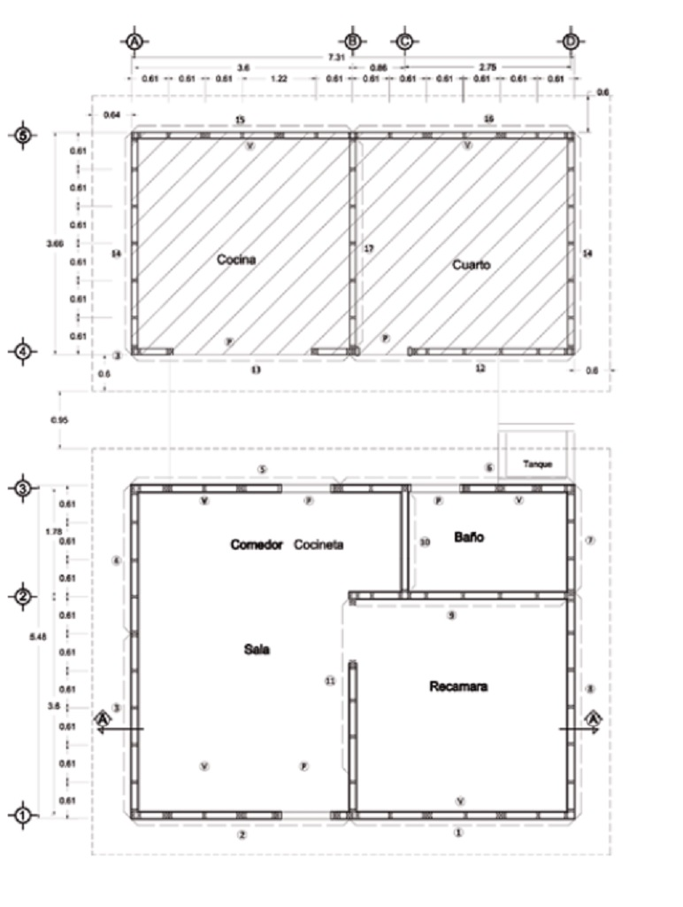
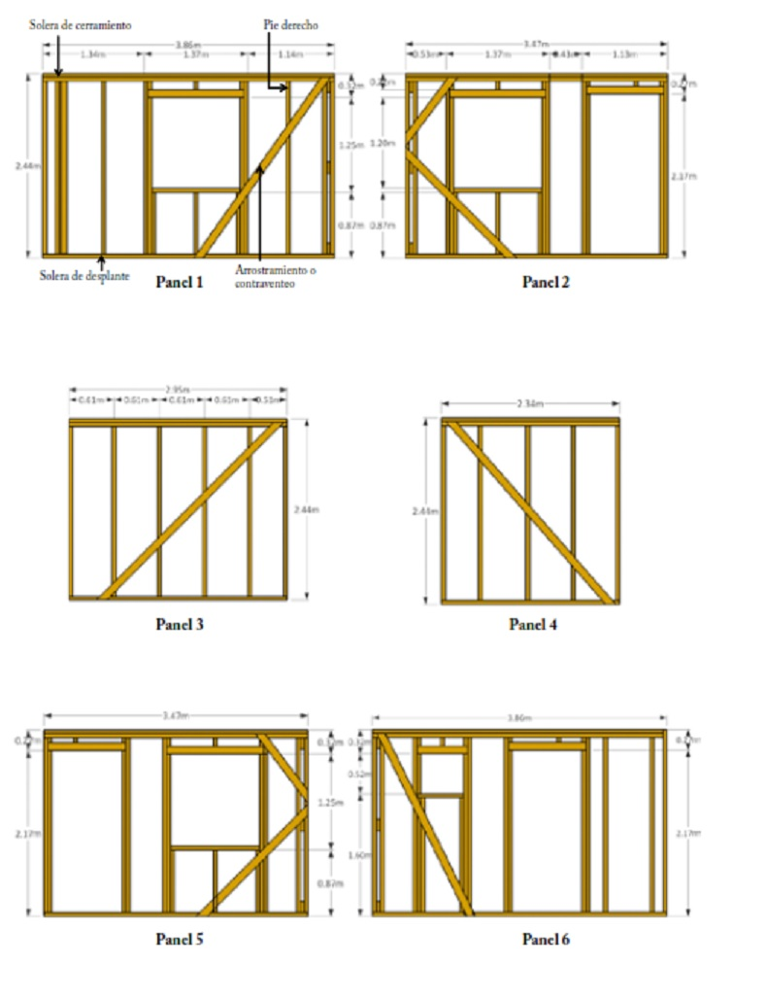
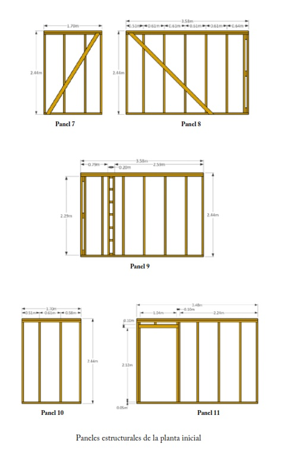
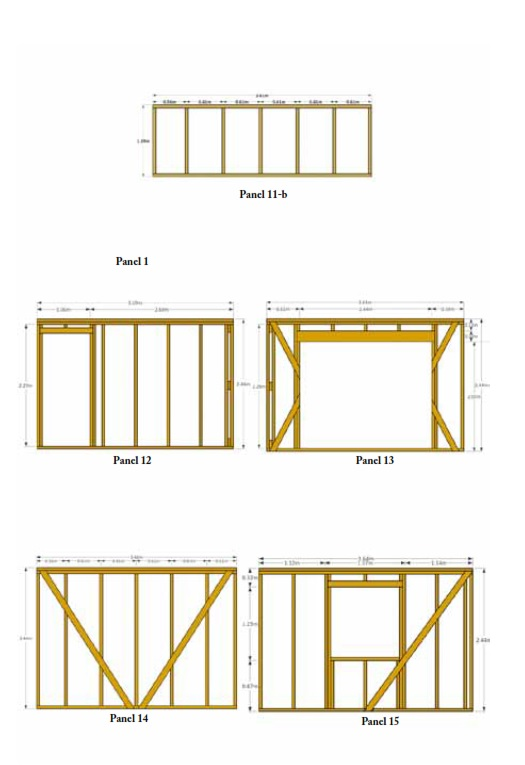
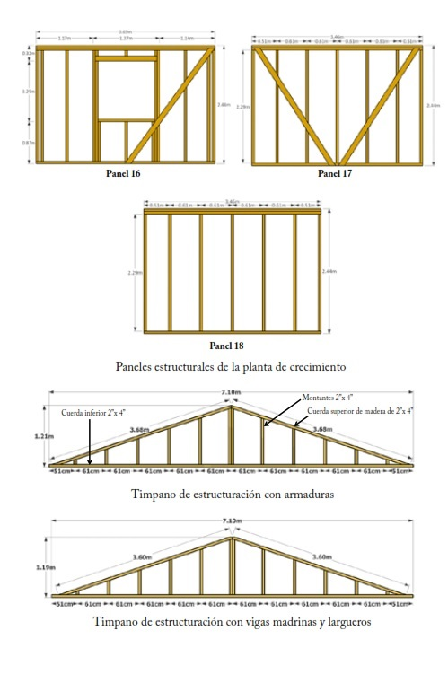

Planos estructurales
Catálogo de paneles
   Para construir la casa, es necesario fabricar los paneles de los muros de acuerdo a las especificaciones de los materiales y para la etapa inicial deberán de considerarse del panel No. 1 al panel No. 11.
Especificaciones de la madera.
1. Toda la madera será de pino clase “B” estructural, de preferencia estufada, con un contenido de humedad no mayor al 18%. Será preservada preferentemente con sales CCA a presión o bien con productos con ingrediente activo de Permetrina técnico por inmersión o brocha.
2. La madera que se use en las soleras de desplante o de cerramiento así como en los pies derechos será de 2” x 4” x 8”.
3. La madera que se use en los arriostramientos o contraventeos será de 1” x 4” x 8”.